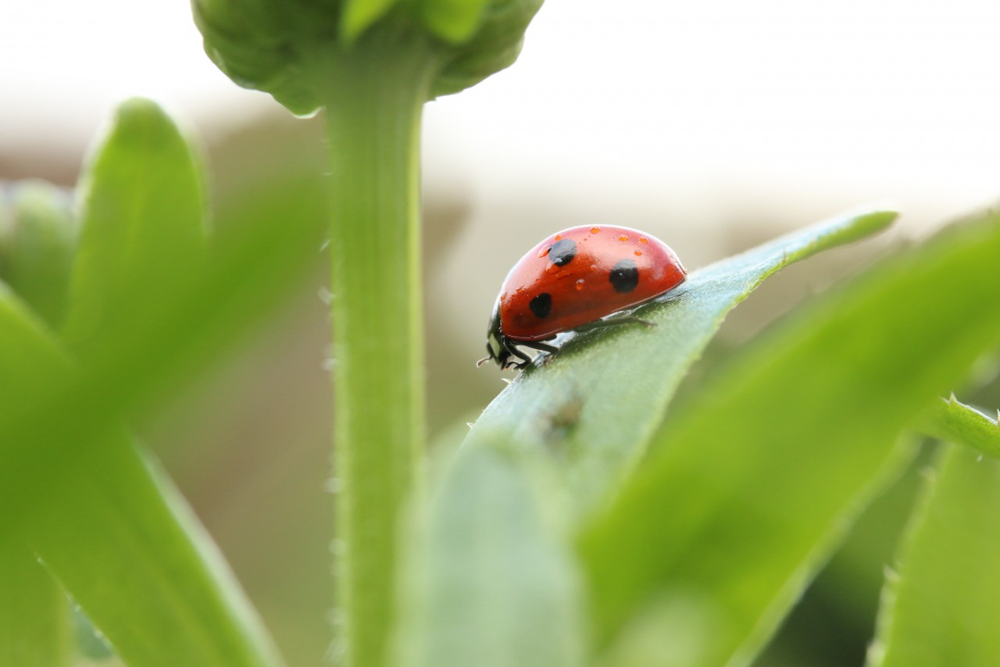
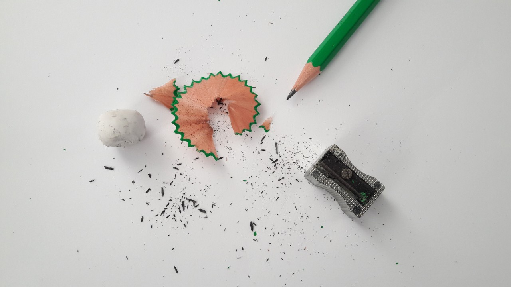
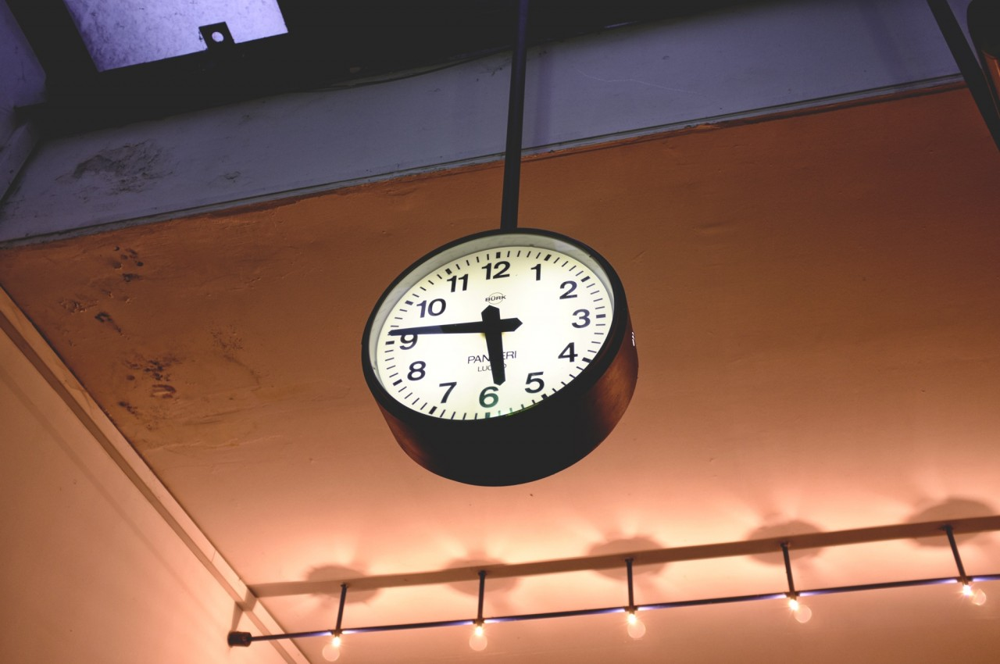
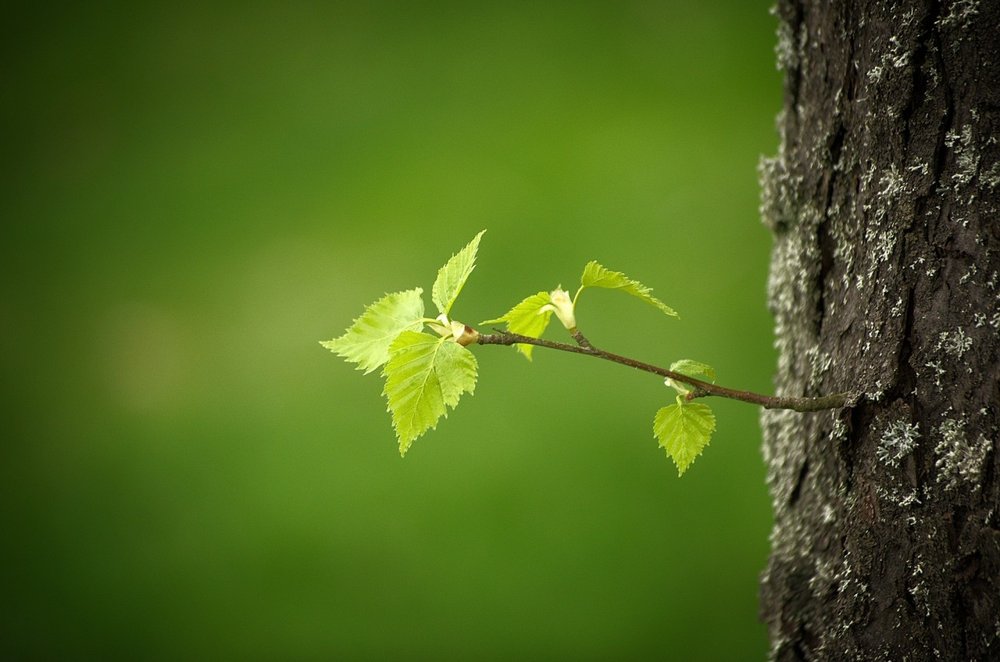
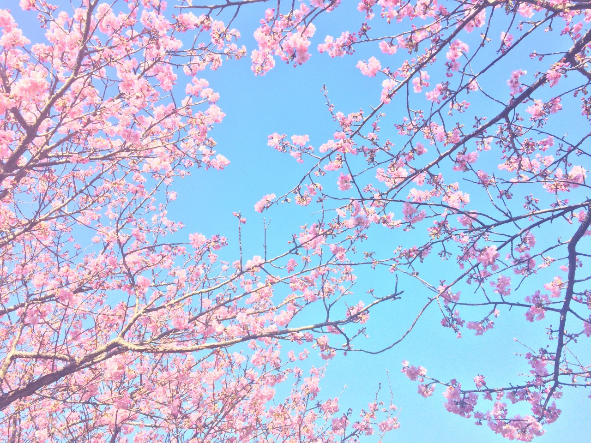

-
Фритрек и нулевой спринт: Подготовка к работе
сомнения
Это было самое начало пути. На этом этапе важно было проникнуться основами и настроиться на учёбу. И, возможно, подумать, как новые знания могут повлиять на ваше будущее.
Было очень непривычно чувствовать себя таким заинтересованным и, при том же, ничего не знающим. Сомнения на счет возможности справиться оставались крайне велики, но стремление к новому не позволило сдаться, за что ему и спасибо!
-
1 спринт: Я — чистый лист
открытиеНа первых этапах мы работали со страхами и сомнениями, которые часто испытывают новички. Один из них — страх перед чистым листом. Это, конечно же, намного сложнее, чем боязнь куска бумаги. Часто за этим ощущением скрываются более глубокие вопросы: с чего начать? а вдруг будет слишком сложно? что, если я не справлюсь?
Приятно удивляло (и удивляет до сих, думаю, пор) как легко воспринимается теория. Появилась уверенность в своих силах, стало понятно, что со всем можно совладать.
-
1 спринт: А если не получится?
преодоление
Первый проект — позади! Но это всё ещё самое начало пути. Радость могла быстро померкнуть и смениться ожиданием провала. Или вы, наоборот, могли вдохновиться успехами и поверить в себя.
Мой первый проект оказался настоящим испытанием! Даже пару раз я думал, что это всё-таки будет слишком тяжело, если не непосильно. Безумно рад, что нашел в себе силы не сдаться, всё исправить и закончить начатое.
-
2 спринт: Погоня за идеалом
дисциплина
На этом этапе вы уже достаточно разбирались в основах вёрстки, чтобы понять, как много ещё впереди. Вы могли попытаться погнаться за идеалом и понять, что он недостижим. А, может, вы вовсе и не подвержены перфекционизму и вместо того, чтобы сделать идеально, старались просто сделать.
Этот спринт дал мне осознание того, как важно не 'сточить' свой потенциал, когда оттачиваешь полученные навыки. Наверное, одна из главных идей, что я получил за пройденное время обучения.
-
2 спринт: О тех, кто рядом
стремлениеВсё это время вы были не одиноки (хотя, возможно, иногда и чувствовали, что одни против целого мира). Вас окружали одногруппники, команда сопровождения и просто близкие люди, которым можно пожаловаться, если очередной макет просто так не поддавался. Осваивать что-то новое легче, когда рядом есть единомышленники, не правда ли?
Думаю, в этот раз я отлично поработал. Проект был сдан с первого раза, с ним не возникало особенных трудностей. Я стал еще крепче стоять на ногах.
-
3 спринт: Обходные стратегии
вариативность
На этом курсе вы постоянно решали разные задачи. В какой-то момент вам могло показаться, что решения просто иссякли. Значит, пришло время посмотреть на задачу под другим углом.
Именно этим мне сейчас и нравится такой род деятельности. Просто прекрасно, когда к одной и той же проблеме можно подойти с разных сторон, найти несколько решений.
-
3 спринт: Когда опускаются руки
баланс
Во время учёбы часто возникает чувство, когда не знаешь, за что хвататься. Вроде и проектную пора сдавать, и задачи хочется порешать, и в теории получше разобраться, и жизнь не забыть пожить. В такие моменты очень нужна концентрация. Вспомните, откуда вы её черпали.
На мой взгляд, лучшим вариантом восстановить силы, перебрать все идеи у себя в голове и, наконец, решить что-то является небольшой перерыв, смена деятельности. Этот метод уже не один раз буквально спасал меня.
-
«Сейчас я здесь»
конец модуля!
Сейчас вы уже очень много знаете о вёрстке. Но это только начало. Во-первых, впереди ещё много материала про «красотищу». Во-вторых, с окончанием курса учёба не заканчивается. Вёрстка — это целый мир. И этот мир постоянно меняется. Познать его полностью не получится, но это тот случай, когда важен сам процесс познания. Ведь часто путь — и есть результат.
Вёрстка прекрасна. Я не мог и представить, что за эти 2-3 месяца обучения смогу узнать столько всего нового и интересного, столько попробовать. Всё больше кажется очевидным, что я нашел то, чем правда хотел бы заниматься и в чем хотел бы становиться лучше. <3